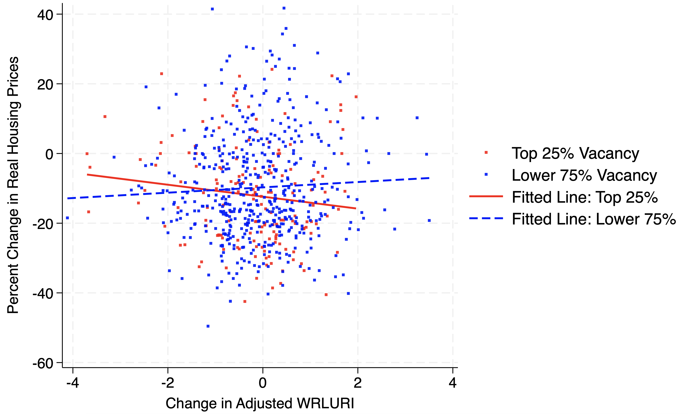

Z Is for Zoning: Market Tightness and the Price Effects of Land Use Regulation
This paper examines the relationship between changes in land-use regulations and housing prices across U.S. municipalities. To measure changes in regulatory intensity, I use the Wharton Residential Land Use Regulatory Index from 2006 and 2018.
I regress municipal-level housing-price growth, measured as the real percentage change in the FHFA House Price Index matched to the municipal level, on changes in regulatory intensity. I then examine whether the relationship between regulatory changes and price growth varies with initial vacancy rates.
The results indicate that increases in regulatory restrictiveness are associated with higher real housing-price growth. This relationship is notably stronger in municipalities that initially had lower vacancy rates.
Read Paper →